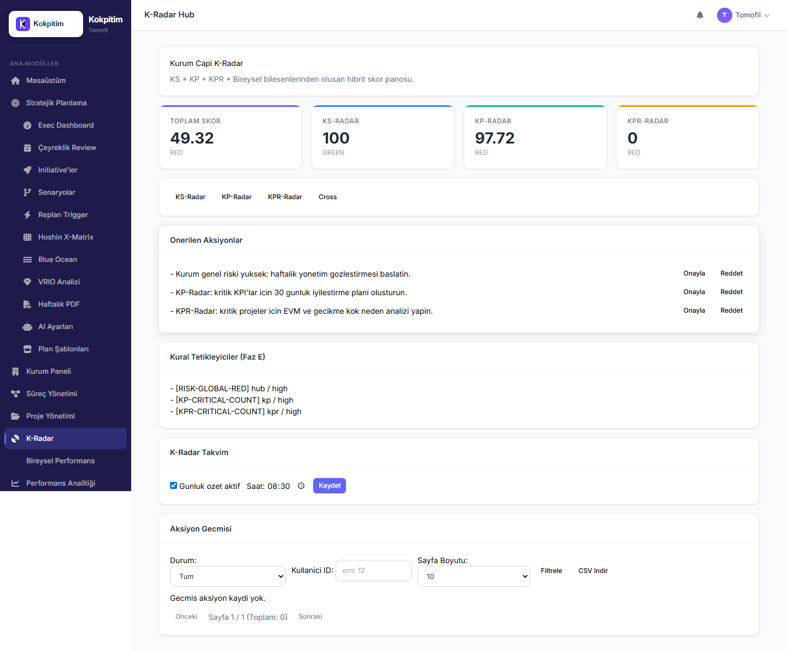
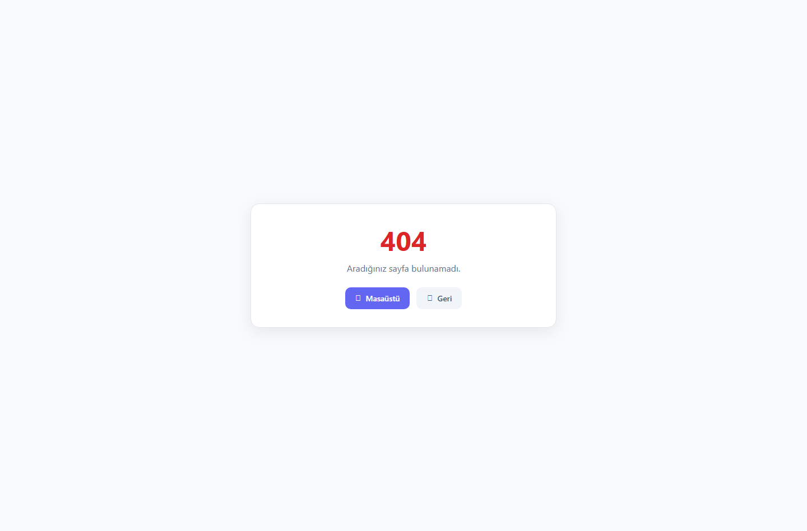
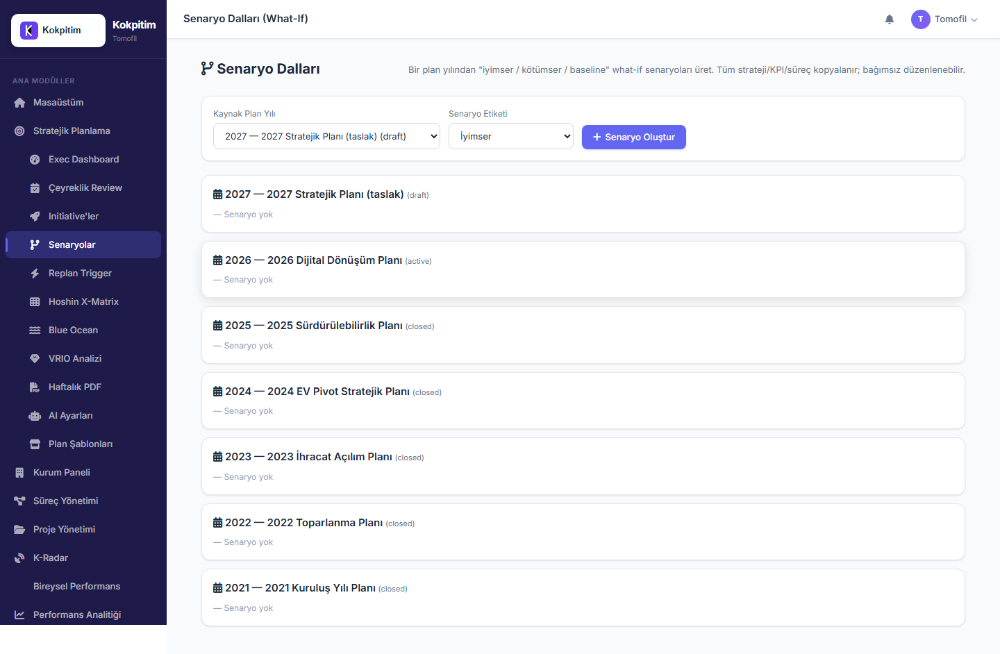
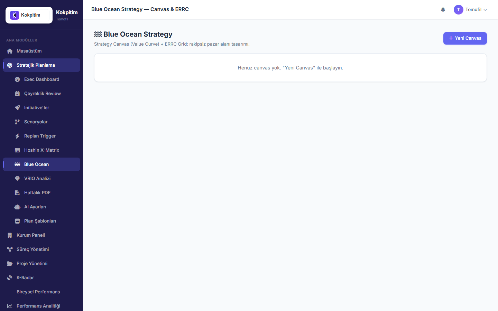
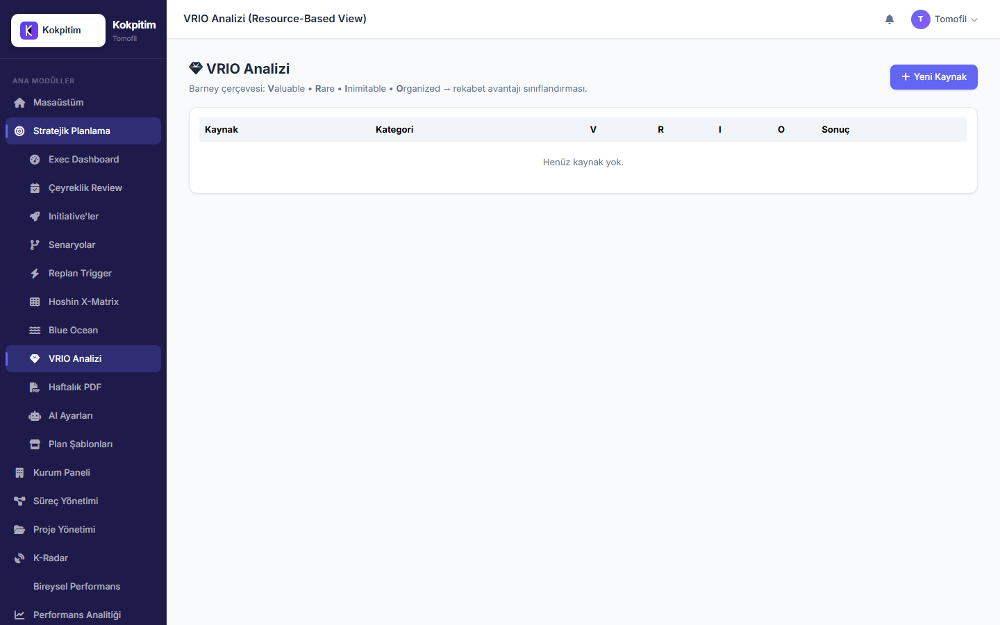
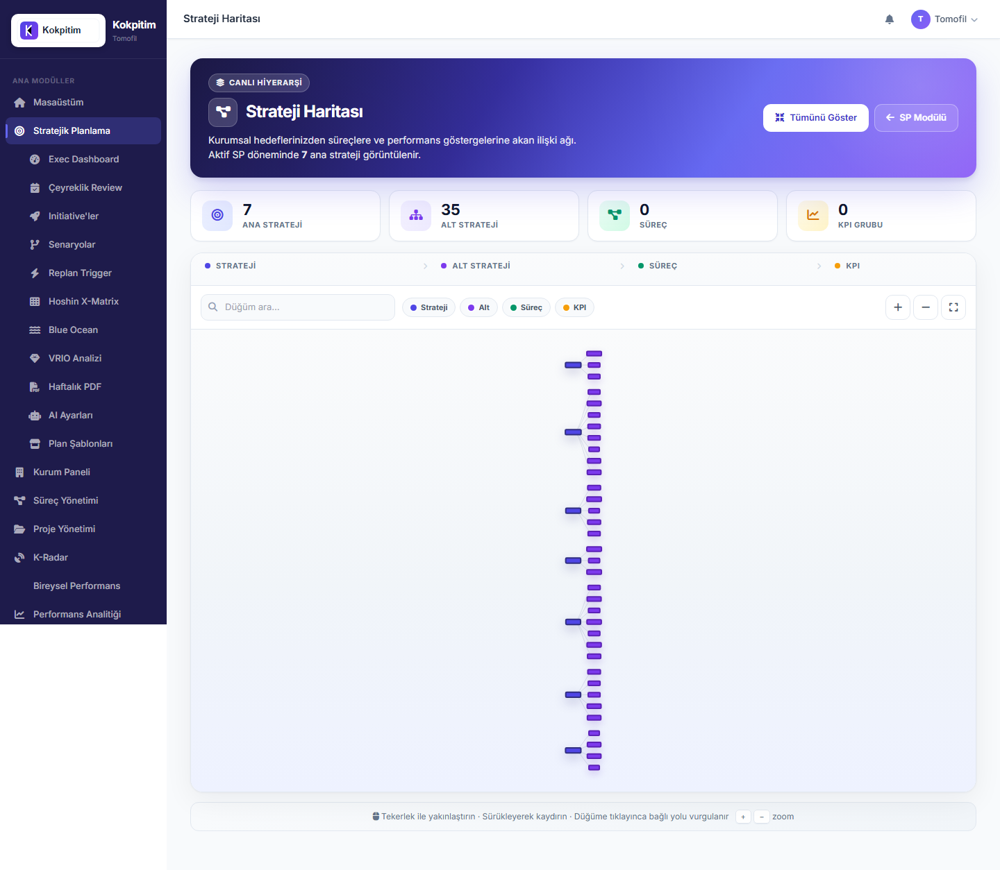

Versiyon: 1.0
Tarih: 2026-05-24
Hedef Kitle: Projeye yeni katılan geliştirici, yatırımcı, müşteri demosu, UX testçisi
Amaç: "Kokpitim nedir, ne yapar, hangi bileşenleri var, nasıl çalışır" sorularına eksiksiz cevap
Kokpitim, kurumların stratejik planlama, KPI takibi ve performans yönetimi süreçlerini tek bir platformda birleştiren çok kiracılı (multi-tenant) B2B SaaS uygulamasıdır.
Akademik standartlar (BSC, OKR, Hoshin Kanri, Blue Ocean, VRIO, EFQM) ile pratik operasyonel ihtiyaçları (KPI veri girişi, faaliyet takibi, proje yönetimi) tek arayüzde birleştirir. Türkçe-first tasarımı, KVKK uyumu ve Türk pazarına özel düzenlemelere (5018, TSRS, SBB) yerel desteği ile global rakiplerden (Cascade, Quantive, ClearPoint) ayrışır.
Bir cümlede: "Stratejik vizyonu operasyonel KPI'lara, KPI'ları bireysel hedeflere bağlayan, kurumsal performans işletim sistemi."
| Hedef Kitle | Tipik Kurum | Asıl Faydası |
|---|---|---|
| Orta-büyük özel sektör | 100-500 kişilik üretim, hizmet, finans şirketleri | BSC + OKR birarada, ESG raporlama hazır |
| Kamu kurumları | Belediyeler (50K+ nüfus), bakanlık genel müdürlükleri | 5018 sayılı Kanun + SBB Stratejik Plan Hazırlama Kılavuzu uyumlu şablon |
| BIST sürdürülebilirlik şirketleri | ~100 BIST 25 + diğer ESG raporlayanları | TSRS uyumlu native ESG modülü |
| KOBİ | 25-100 kişilik dijitalleşen şirketler | KOSGEB Dijital Dönüşüm Desteği uyumlu |
Sorun: Stratejik plan kâğıt üstünde kalır, günlük iş ona göre yürümez.
Kokpitim çözümü: Strateji → Alt Strateji → Süreç → KPI → Bireysel Hedef otomatik bağlantısı. Her gün veri girişinde stratejik etki anlık ölçülür.
Sorun: Bir kurum hem BSC perspektifleri hem OKR çeyrek hedefleri tutmak istiyorsa, ikisini Excel'de elle bağlamak zorunda.
Kokpitim çözümü: Üçü de native, aynı veri kaynağından beslenir. Tek tıkla aynı KPI hem BSC "Finansal Perspektif"e hem OKR Key Result'a hem Strategy Cascade'e bağlanır.
Sorun: TSRS (Türkiye Sürdürülebilirlik Raporlama Standartları) 2026'da zorunlu hale geldi. KAP'a açıklama yapmayan şirketlere 70.920 TL/yıl ceza.
Kokpitim çözümü: Native ESG modülü (E/S/G kategorileri + Scope 1/2/3) + KAP uyumlu PDF çıktısı.
Sorun: "Dijital Dönüşüm 2026-2028" gibi 3 yıllık programlar yıllık plan yıllarına sığmaz.
Kokpitim çözümü: Initiative modeli — start_year/end_year ile yıllık plandan bağımsız yaşam döngüsü.
Sorun: "Optimist senaryoda bu yatırımı yaparsak; kötümser senaryoda bu pivot'a hazır mıyız?" sorusu için ayrı Excel'ler.
Kokpitim çözümü: PlanYear'dan dallandırılan scenario_of_id sistemi — baseline + optimistic + pessimistic paralel dallar.
Sorun: KPI'lar düşmeye başladığı an müdahale gecikir.
Kokpitim çözümü: ReplanTrigger motoru — "2 ardışık dönem hedef altı" gibi kurallar otomatik tetiklenir, AI Pivot Advisor öneri üretir.
Her şirket bir tenant. Veri izolasyonu tüm tablolarda tenant_id kolonu ile sağlanır. Her sorguya otomatik tenant filtresi uygulanır (decorator'lar + helper'lar).
tenants
├── users (tenant_id)
├── plan_years (tenant_id)
│ ├── strategies (tenant_id, plan_year_id)
│ ├── processes (tenant_id, plan_year_id)
│ ├── plan_projects (plan_year_id)
│ └── initiative_milestones (initiative_id → tenants)
├── initiatives (tenant_id)
├── replan_triggers (tenant_id)
├── blue_ocean_canvases (tenant_id)
├── vrio_resources (tenant_id)
├── llm_usage_logs (tenant_id)
└── tenant_llm_configs (tenant_id, BYOK key)
Sonuç: Tenant A'nın verisi Tenant B'ye hiçbir koşulda sızmaz. Veri izolasyonu DB seviyesinde garanti altında.
Stratejik planlama doğası gereği yıllıktır. Her yıl yeni bir PlanYear açılır. İki klonlama modeli:
source_*_id zinciri orjini takip eder.Tüm rotalar tek bir blueprint altında: app_bp (/micro prefix).
Modüller (micro/modules/) bu blueprint'e import edilerek registered olur.
micro_bp (app_bp)
├── /sp/* (Stratejik Planlama)
├── /surec/* (Süreç Yönetimi)
├── /process/* (Süreç — modern URL)
├── /k_radar/* (KPI Radar)
├── /k_rapor/* (KPI Rapor)
├── /project/* (Proje Yönetimi)
├── /bireysel/* (Bireysel Karne)
├── /kurum/* (Kurum Ayarları)
├── /admin/* (Sistem Yönetimi)
├── /masaustu (Dashboard)
├── /bildirim/* (Bildirimler)
├── /ayarlar/* (Kişisel Ayarlar)
└── /auth/* (Login/Profil)
/sp)
Sorumluluğu: Stratejik plan oluşturma, takip, senaryo yönetimi, akademik çerçeveler.
Alt sayfalar (kullanıcı için görünür):
| URL | Sayfa | İşlev |
|---|---|---|
| /sp | Ana sayfa | Vizyon/Misyon/Değerler + strateji ağacı (akış olgunluk göstergesi) |
| /sp/donemler | Plan Yılları | Yıl oluşturma, klonlama, kapatma, aktifleştirme |
| /sp/sihirbaz/yeni-yil | Yeni Yıl Sihirbazı | Önceki yıldan klon önizleme + uygulama |
| /sp/templates | Şablon Marketplace | SBB Kamu, OKR vb. hazır şablonlar |
| /sp/strateji-haritasi | Strateji Haritası | vis-network grafik (Strategy↔SubStrategy↔Process↔KPI↔Initiative) |
| /sp/xmatrix | Hoshin X-Matrix | 4 çeyrek korelasyon matrisi |
| /sp/blue-ocean | Blue Ocean Canvas | Strategy Canvas (Chart.js) + ERRC Grid |
| /sp/vrio | VRIO Analizi | Kaynak/yetenek matrisi + Barney etiketi |
| /sp/initiatives | Initiative'ler | Çok yıllı stratejik girişimler |
| /sp/scenarios | Senaryolar | What-if dalları (baseline/optimistic/pessimistic) |
| /sp/replan-triggers | Replan Trigger | Otomatik replan kuralları |
| /sp/ceyreklik-review | Çeyreklik Review | Strateji sağlık skoru + AI özet |
| /sp/exec-dashboard | Exec Dashboard | Hero + 6 KPI tile + AI Pivot |
| /sp/ayarlar/ai | AI Ayarları | BYOK key + provider seçimi |
| /sp/llm-usage | LLM Kullanım | Token tüketim + maliyet özeti |
| /sp/digest/weekly.pdf | Haftalık Rapor | PDF özet |
| /sp/okr | OKR | Objective + Key Result yönetimi |
| /sp/misyon, /sp/vizyon, /sp/degerler | Kurumsal Kimlik | Yıla özgü metinler |
Veri modeli:
- Strategy, SubStrategy, PlanYear, KpiYearConfig, StrategyYearConfig
- Initiative, InitiativeMilestone
- ReplanTrigger, ReplanTriggerEvent
- BlueOceanCanvas, BlueOceanFactor, BlueOceanERRC
- VRIOResource
- OkrObjective, OkrKeyResult
/surec, /process)
Sorumluluğu: Süreç tanımlama, KPI yönetimi, periyodik veri girişi, faaliyet takibi.
| URL | Sayfa | İşlev |
|---|---|---|
/process |
Süreç listesi | Tüm süreçler + filtreleme |
/process/<id>/karne |
Süreç Karnesi | KPI veri girişi (12 aylık matris) |
/process/<id>/faaliyetler |
Faaliyetler | Operasyonel görev takibi |
Veri modeli:
- Process, ProcessKpi, KpiData, KpiDataAudit
- ProcessActivity, ProcessActivityAssignee
- ProcessSubStrategyLink (contribution_pct ile)
/k_radar)
Sorumluluğu: KPI sağlık göstergeleri, risk, anomali, kalite parametreleri.
| URL | İşlev |
|---|---|
/k_radar |
Hub — özet kartlar |
/k_radar/risk |
Risk register + heat map |
/k_radar/cross/paydas |
Paydaş analizi |
/k_radar/cross/a3 |
A3 problem solving |
/k_radar/cross/rekabet |
Rekabet analizi |
/k_radar/kp/darbogaz, /k_radar/kp/oee, /k_radar/kp/vsm, vb. |
KP modülleri |
/k_radar/kpr/cpm, /k_radar/kpr/evm |
Proje radar |
/k_radar/ks/swot-summary, /ks/bsc, /ks/hoshin |
Strateji analiz |
/k_rapor)Sorumluluğu: Raporlama, trend analizi, Excel/PDF export, anomali tespiti.
30+ API endpoint: trend, forecast, kurumsal, uyum, faaliyet, risk, denetim, k-vektor, EVM, paydaş analizi, rekabet, PG dağılımı, vb.
/project)
Sorumluluğu: Proje portföyü, görev takibi, Gantt/Kanban, EVM.
| URL | İşlev |
|---|---|
/project/list |
Proje listesi |
/project/<id> |
Proje detay |
/project/<id>/views/gantt |
Gantt görünümü |
/project/<id>/views/kanban |
Kanban board |
/project/<id>/views/raid |
RAID log (Risks/Assumptions/Issues/Dependencies) |
/project/<id>/views/calendar |
Takvim |
/sp/api/projects/<id>/evm |
EVM metrikleri (PV/EV/AC/CPI/SPI/EAC) + CPM kritik yol |
Veri modeli:
- PlanProject, PlanProjectTask, PlanProjectActivity
- Project, Task, RaidItem (modern portföy modeli)
/bireysel)
Sorumluluğu: Kişisel KPI karnesi, bireysel hedefler, faaliyet takibi.
| URL | İşlev |
|---|---|
/bireysel |
Ana sayfa |
/bireysel/karne |
12 aylık kişisel KPI tablosu |
Veri modeli:
- IndividualPerformanceIndicator
- IndividualActivity, IndividualActivityTrack
- IndividualKpiData, FavoriteKpi
/kurum)Sorumluluğu: Kurum profili, logo, vizyon/misyon/değerler.
/admin)Sorumluluğu: Kullanıcı yönetimi, tenant yönetimi, paket, yedekleme, bakım modu.
/masaustu)Sorumluluğu: Kişisel dashboard — bildirim, eksik veri, takvim, hızlı linkler.
/bildirim — Bildirim merkezi/ayarlar/eposta, /ayarlar/yedekleme — Kişisel ayarlar/auth/login, /auth/profil — Kimlik/api/v1/* — REST API (Swagger)/api/v1/dataconn/* — Power BI / Tableau JSON connectorTenant ─┬── User (n)
├── PlanYear (n)
│ ├── Strategy (n)
│ │ └── SubStrategy (n)
│ │ └── ProcessSubStrategyLink (m:n with Process)
│ ├── Process (n)
│ │ ├── ProcessKpi (n)
│ │ │ └── KpiData (n) [aylık/dönemsel]
│ │ ├── ProcessActivity (n)
│ │ └── members/leaders/owners (m:n)
│ ├── PlanProject (n)
│ │ ├── PlanProjectTask (progress + budget)
│ │ └── PlanProjectActivity
│ └── TenantYearIdentity (1, mission/vision/values)
├── Initiative (n) — start_year/end_year
│ └── InitiativeMilestone (n)
├── ReplanTrigger (n)
│ └── ReplanTriggerEvent (n)
├── BlueOceanCanvas (n)
│ ├── BlueOceanFactor (n)
│ └── BlueOceanERRC (n)
├── VRIOResource (n)
├── LLMUsageLog (n) [her AI çağrısı]
├── LLMQuotaOverride (1)
├── TenantLLMConfig (1, BYOK key)
└── SubscriptionPackage
source_*_id zinciri: PlanYear klonlandığında her kayıt önceki yıldaki aslına işaret eder. Lineage takibi için kritik.scenario_of_id: PlanYear başka bir PlanYear'ın senaryosu mu? NULL ise ana plan, dolu ise scenario branch.plan_year_id her veri tablosunda: Yıllar arasında veri karışmasın diye.tenant_id her temel tabloda: Multi-tenant izolasyon garantisi.Sprint bazlı önemli migration'lar:
- y2z3a4b5c006 — Plan year tabloları
- a4b5c6d7e008 — Initiative + Milestone
- b5c6d7e8f009 — Scenario branching (partial unique index)
- c6d7e8f9g010 — Replan triggers
- d7e8f9g0h011 — Blue Ocean + VRIO
- e8f9g0h1i012 — Task EVM alanları
- f9g0h1i2j013 — LLM usage + quota
- g0h1i2j3k014 — Tenant LLM config (BYOK)
| Rol | Kapsam | Yetki |
|---|---|---|
| Admin (platform sahibi) | Tüm tenant'lar | Sistem yönetimi, bakım modu, paket yönetimi |
| tenant_admin | Tek tenant | Tüm SP işlemleri, kullanıcı yönetimi, kurum ayarları |
| executive_manager | Tek tenant | tenant_admin ile aynı SP yetkileri + üst yönetim raporları |
| ust_yonetim | Tek tenant | SP modülüne yönetim erişimi |
| kurum_yoneticisi | Tek tenant | Kurum ayarları |
| surec_lideri | Atandığı süreçler | Süreç KPI yönetimi, veri giriş |
| kalite | Atandığı süreçler | Süreç yönetimi |
| manager | Atandığı kullanıcılar | Bireysel raporlama |
| kurum_kullanici | Kendi verileri | Bireysel karne, atandığı süreç KPI veri girişi |
| izleyici | Görüntüleme | Sadece read-only |
@login_required — Her korunan rotada zorunlu_check_sp_role() — SP modülü erişimi (helpers.py:41-48)@sp_manage_required decorator — SP yazma yetkisi_admin_backup_guard() — Admin-only yedekleme_is_admin_or_tenant_admin() — Admin paneli erişimiPRIVILEGED_ROLES — Proje modülü ({"Admin", "tenant_admin", "executive_manager"})Toplam 76 aktif sayfa, 684 rota. Sayfa tipleri:
/masaustu — Kişisel dashboard (FullCalendar widget + 4 stat kartı + 13 alt bölüm)/sp/exec-dashboard — Üst yönetim hero kart + 6 KPI tile + AI Pivot panel/k_radar — KPI radar hub/k_rapor — Raporlama dashboard/bireysel/karne — 12 aylık matris (kişisel)/process/<id>/karne — 12 aylık matris (süreç)/sp/sihirbaz/yeni-yil — Multi-step wizard/sp/xmatrix — 4 çeyrek HTML tablosu (Strategy↔SubStrategy↔Initiative↔KPI)/sp/blue-ocean — Chart.js Value Curve + ERRC 4-kadran grid/sp/vrio — Canlı checkbox tablosu + Barney etiketi/sp/strateji-haritasi — vis-network interaktif grafik/sp/initiatives — Liste + modal form/sp/scenarios — Liste + dallandırma form/sp/replan-triggers — CRUD + "Şimdi Değerlendir" butonu/project/list, /project/new, /project/<id>/edit — Proje yaşam döngüsü/admin/yonetim-paneli/kullanici-detay — Kullanıcı CRUD| Bileşen | Kütüphane | Nerede |
|---|---|---|
| Çizgi/Bar grafik | Chart.js 4.4 | Exec dashboard, Blue Ocean, k_rapor trend |
| Network/Graph | vis-network | Strateji haritası, dynamic flow |
| Gantt | Custom | Proje gantt view |
| Kanban | Custom | Proje kanban view |
| FullCalendar | FullCalendar.js | Masaüstü takvim |
| Modal | mc-modal CSS | Tüm CRUD işlemleri (KURALLAR §5) |
| Toast | SweetAlert2 | Bildirim, başarı/hata mesajı |
| Skeleton loader | CSS @keyframes mc-shimmer |
Exec dashboard tile'lar |
html.dark override)mc-* component library (components.css 1.3K satır)Detaylı kural seti: docs/UI-KILAVUZU.md

Tüm AI çağrıları tek geçitten geçer: app/services/llm_gateway.py
from app.services.llm_gateway import call_llm
result = call_llm(
tenant_id=current_user.tenant_id,
endpoint="ai_pivot",
prompt=user_prompt,
system_prompt="Sen kıdemli strateji danışmanısın...",
)
# result = {text, source, provider, model, usage, quota_summary, ...}
| Provider | Default Model | Maliyet (1M token) |
|---|---|---|
| Gemini | gemini-2.5-flash-lite |
$0.10/$0.40 (giriş/çıkış) |
| OpenAI | gpt-4o-mini |
$0.15/$0.60 |
| Anthropic | claude-haiku-4-5 |
$1.00/$5.00 |
| Groq | llama-3.3-70b-versatile |
$0.59/$0.79 |
| OpenRouter | google/gemini-2.0-flash-exp:free |
0 (ücretsiz katman) |
1. Tenant BYOK key var mı + aktif mi? → Tenant key kullan (kendi faturası)
2. Sistem default key var mı (env)? → Sistem key (kotalı)
3. Hiçbiri yok → text=None, caller heuristic'e düşer
| Katman | Varsayılan | Override |
|---|---|---|
| Cooldown (aynı tenant + endpoint) | 30 sn | Tenant override tablosu |
| Tenant günlük çağrı | 50 | Aynı |
| Tenant aylık çağrı | 500 | Aynı |
| Tenant aylık maliyet USD | $2 | Aynı |
| Sistem geneli günlük | 1.000 | env: LLM_QUOTA_LIMITS |
| Sistem aylık maliyet | $50 | env |
| Alarm eşiği | %80 | env |
| Kod | Hangi Servis | Tipik Token |
|---|---|---|
ai_pivot |
Strategy Pivot Advisor | ~2.000 |
ai_coach |
Bireysel performans koçluğu | ~1.500 |
ai_summary |
Yönetici özet | ~3.000 |
ai_early_warning |
Erken uyarı | ~1.000 |
ai_advisor |
Strateji danışmanı | ~2.500 |
Tenant kendi API anahtarını /sp/ayarlar/ai sayfasından girer. Fernet ile şifreli saklanır. Kullandığında sistem kotası harcanmaz, kendi sağlayıcı faturasından düşer.
Tüm detay: docs/AI-POLITIKASI.md (13 bölüm, sözleşme niteliğinde).
draft → active → closed → archived
A) Overlay Clone (clone_plan_year): Sadece YearConfig kayıtları açar, ana entity'ler yeniden kullanılır.
B) Full Clone (clone_full_plan_year): Tüm strateji, alt strateji, süreç, KPI, faaliyet, proje yeniden yaratılır. source_*_id zinciri ile orijini takip eder.
Aynı yıla birden fazla PlanYear (baseline + optimistic + pessimistic). Partial unique index: WHERE scenario_of_id IS NULL.
CREATE UNIQUE INDEX uq_plan_year_tenant_year_main
ON plan_years (tenant_id, year)
WHERE scenario_of_id IS NULL;
Senaryolar bu kısıtın dışında — istediğiniz kadar açılabilir.
Klonlanmış kayıtlar üstüne yıllık config tabloları (KpiYearConfig, StrategyYearConfig, ProcessYearConfig) override edilebilir. Örnek: bir KPI'nın 2026 hedefi 100, 2027'de 120 olabilir — KPI'nın kendisi değişmez, sadece YearConfig.
kpi_data tablosu/sp/sihirbaz/yeni-yil açarPlanYear'a kopyalanır (source_*_id zinciri ile)draft status'ta açılır, üzerinde değişiklik yapılıractive yapılır, önceki yıl closed olurTek bir plan yılından alternatif gelecek varyasyonları üretmek. Örnek: "2027 baseline" + "2027 optimistic (yatırım büyütülürse)" + "2027 pessimistic (kriz olursa)". Her senaryo bağımsız KPI hedefi, Initiative listesi, kaynak dağılımı tutar. Exec dashboard'da karşılaştırılır.
start_year ve end_year olur, milestone'lara bölünür. Plan year'dan bağımsız yaşam döngüsü.Modern strateji cadence pattern'ı:
- Yıllık: Vizyon ve ana strateji (sabit)
- Çeyreklik: Strateji ayarlama, pivot kararı
- Aylık: Roadmap iyileştirme, operasyonel düzeltme
/sp/ceyreklik-review çeyrek özet üretir: KPI sağlığı, Initiative ilerleme, Risk değişimi, Anomali listesi, Trigger event'leri → karar tablosu.
Admin trigger tanımlar (/sp/replan-triggers):
- Tip: kpi_below_target, overdue_activity_pct, risk_score, anomaly_high
- Koşul: KPI ID + threshold + consecutive_periods
- Aksiyon: notify / suggest_pivot / create_review
"Şimdi Değerlendir" butonu (veya cron) çalışınca koşullar kontrol edilir, tetiklenen trigger'lar için ReplanTriggerEvent kaydı açılır, AI Pivot Advisor çağrılır.
build_exec_snapshot() içinde ağırlıklı 4 boyut:
| Boyut | Ağırlık | Formül |
|---|---|---|
| KPI hedef üstü | %40 | on_target_pct × 0.4 |
| KPI veri kapsama | %20 | (with_data/total) × 100 × 0.2 |
| Faaliyet vaktinde | %20 | (100 - overdue%) × 0.2 |
| Sıfır kritik risk | %10 | varsa +10 |
| Sıfır yüksek anomali | %10 | varsa +10 |
Sonuç: 0-100 arası composite skor.
Bu basit bir heuristic. Sektör spesifik benchmark, geçmiş trend, vizyon ağırlığı yok. Olgunlaşma için: docs'taki ileri model önerileri.
Doğru kullanım: Öneriyi "akıllı görünen 1. seviye danışman" gibi alın. Stratejik kararı uygulamadan önce kendiniz değerlendirin.
tenant_id filtresi zorunlu@csrf.exempt ile bypass (login_required + tenant_id ile yeterli)SECRET_KEY türevi)| Katman | Teknoloji |
|---|---|
| Backend | Python 3.13, Flask 3.1, SQLAlchemy 2.0 |
| Database | PostgreSQL (production), SQLite (geliştirme yedek) |
| Migration | Alembic |
| Cache | Flask-Caching (Redis production) |
| Rate Limit | Flask-Limiter (Redis production) |
| Auth | Flask-Login + pyotp (TOTP) + Authlib (Google OAuth) |
| Frontend | Jinja2 templates + Tailwind CDN + Alpine.js |
| Chart | Chart.js 4.4, vis-network |
| Modal/Toast | SweetAlert2 11 + custom mc-modal |
| WeasyPrint → reportlab fallback | |
| WSGI Server | Waitress (production), Werkzeug (dev) |
| AI | google-generativeai, openai, anthropic SDKs |
| Container | Docker (Oracle VM production) |
| SSL | pip-system-certs (Windows uyumu için) |
kokpitim/
├── app/
│ ├── models/ # Tüm SQLAlchemy modelleri
│ ├── services/ # İş mantığı katmanı
│ │ ├── llm_gateway.py
│ │ ├── llm_quota_service.py
│ │ ├── ai_pivot_advisor_service.py
│ │ ├── exec_dashboard_service.py
│ │ ├── hoshin_xmatrix_service.py
│ │ ├── project_evm_service.py
│ │ ├── weekly_digest_service.py
│ │ ├── plan_year_service.py
│ │ ├── plan_year_template_service.py
│ │ └── ...
│ ├── templates_data/ # JSON şablonlar (SBB Kamu vb.)
│ └── utils/ # Yardımcılar (security, plan_year_filter, vb.)
├── micro/modules/ # Blueprint modülleri
│ ├── sp/ # Stratejik Planlama
│ ├── surec/ # Süreç Yönetimi
│ ├── k_radar/ # KPI Radar
│ ├── k_rapor/ # Raporlama
│ ├── proje/ # Proje Yönetimi
│ ├── bireysel/ # Bireysel Karne
│ ├── kurum/ # Kurum Ayarları
│ ├── admin/ # Sistem Yönetimi
│ ├── shared/ # Auth, ayarlar, bildirim
│ └── ...
├── ui/templates/platform/ # Jinja2 templateler
│ ├── base.html
│ ├── sp/ # 18 sayfa
│ ├── surec/ # 3 sayfa
│ ├── k_radar/ # 16 sayfa
│ ├── proje/ # 9 sayfa
│ └── ...
├── ui/static/platform/ # CSS, JS, vendor
│ ├── css/
│ │ ├── components.css # Tasarım sistemi (1.3K satır)
│ │ ├── sidebar.css
│ │ └── ...
│ └── js/
├── platform_core/ # Blueprint registry
├── extensions.py # Flask extensions
├── config.py # Konfigürasyon
├── app.py # Entry point (port 5001)
├── migrations/versions/ # Alembic
├── docs/ # Dokümantasyon
│ ├── AI-POLITIKASI.md
│ ├── UI-KILAVUZU.md
│ ├── KURALLAR-MASTER.md
│ └── test/ # Bu dosya + kılavuzlar
├── scripts/ops/oracle/ # VM deploy script'leri
└── requirements*.txt # Bağımlılıklar
claude/<konu> veya feature/<konu> → main'e --no-ff mergefeat(sp): ..., fix(...), docs(...))Co-Authored-By: Claude Opus 4.7baseline-YYYY-MM-DD (stabil nokta), deploy-YYYY-MM-DD (VM'e gönderim)docs/TASKLOG.md'ye kayıtgit push origin mainssh ubuntu@129.159.30.175cd /opt/kokpitim/app && sudo bash scripts/ops/oracle/oracle_safe_deploy.shBu belge yaşayan bir doküman. Yeni özellik eklendiğinde, yeni sayfa açıldığında bu belge güncellenir.
Bağlantılı belgeler:
- docs/UI-KILAVUZU.md — Tasarım sistemi
- docs/AI-POLITIKASI.md — AI çağrı kuralları
- docs/KURALLAR-MASTER.md — Kodlama disiplini
- docs/test/tenant_admin_kullanim_kilavuzu.md — Admin kılavuzu
- docs/test/tenant_kullanici_kilavuzu.md — Standart kullanıcı kılavuzu
Sorular için: Bu belgede cevap bulamıyorsanız docs/ klasörünü inceleyin veya proje ekibine sorun.
Aşağıda Kokpitim platformunun ana ekranlarının tam görüntüleri yer almaktadır.







